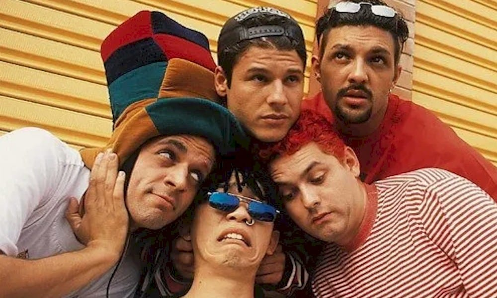

MAMONAS ASSASSINAS

Top left: Dinho Top right: Sergio Bottom left: Samuel Reoli Bottom middle: Bento Hinoto Bottom right: Júlio Rasec
Photo Credit https://segredosdomundo.r7.com/mamonas-assassinas/
The Best Satirical Brazilian Rock Band of All Time
Interesting facts about Mamonas Assassinas:
- Their musical style was a mixture between rock and a wide range of styles
- They started their activity in 1989 without Dinho (the lead vocalist)
- Although they were making music for a couple of years, they really started to gain success in 1995
- Their first album sold less than 100 copies and they realized that bringing humor to their music was more successful
- Their main album “Mamonas assassinas” was released in 1995 and it was sold more than 2 million copies
- Main songs that became legendary in Brasil: "Vira-vira", "Pelados em Santos", "Robocop Gay", "Sábado de Sol"
- On March 2, 1996 all the members died in a plane crash after 8 months of finally gaining fame
- One of the members (Júlio Rasec) had a nightmare the night before they died about a plane-crashing
We, Brazilians, have great and funny memories from Mamonas Assassinas. They had a great energy and made our Sunday afternoons filled with laughter. Even though it has been 24 years since they are gone, many people still pay tribute to them. For example, there are many cover bands replicating their work and their music is still played at a constant basis.